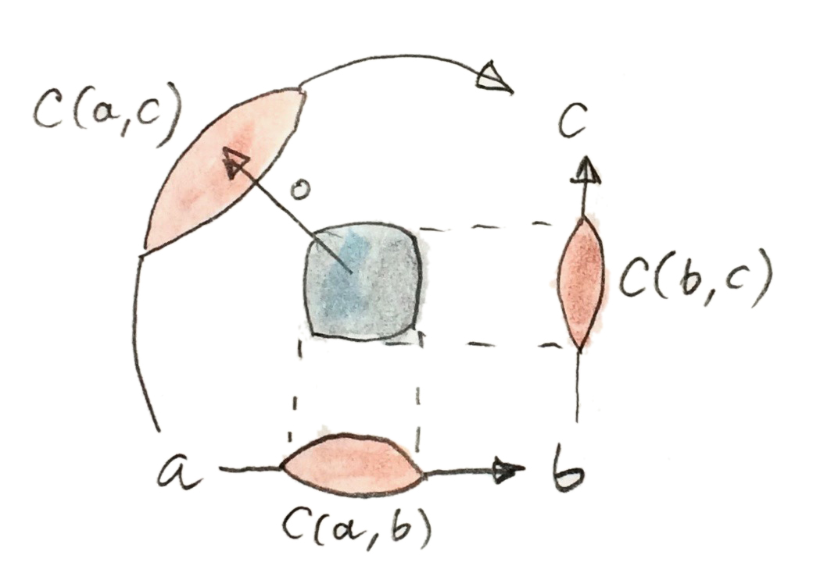
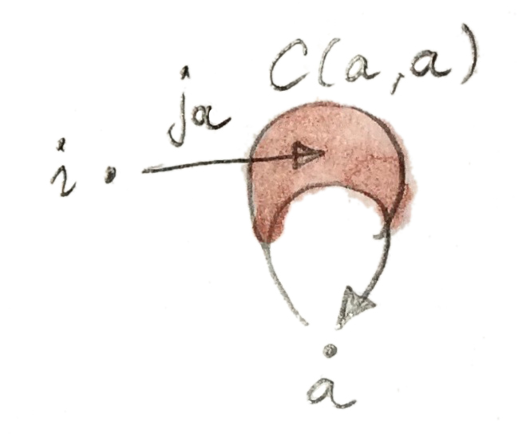

如果一个范畴的对象构成集合，它就是小范畴（small category）。但我们知道，有些东西比集合更大。众所周知，在标准集合论（Zermelo–Fraenkel 集合论，可选择加入选择公理）中无法构造所有集合的集合。所以，所有集合所成的范畴必然是大范畴。Grothendieck 宇宙之类的数学技巧可以定义超越集合的汇集，从而让我们能够讨论大范畴。
如果任意两个对象之间的态射构成集合，范畴就是局部小的（locally small）。若它们不构成集合，就必须重新思考一些定义。特别是，如果连态射都无法从集合中选取，“复合态射”是什么意思？解决办法是自举：把作为 Set 中对象的 Hom 集，换成另一个范畴 V 中的对象。区别在于，一般的对象没有元素，所以不能再谈论单个态射。我们必须只用可对整个 Hom 对象执行的操作，定义富范畴（enriched category）的所有性质。为此，提供 Hom 对象的范畴必须具有额外结构——它必须是幺半范畴。若把这个幺半范畴称为 V，就可以讨论“在 V 上富化的范畴 C”。
除了大小问题，我们也可能希望把 Hom 集推广成具有比普通集合更丰富结构的东西。例如，传统范畴没有对象间距离的概念。两个对象要么由态射相连，要么不相连；与某对象相连的所有对象都是它的邻居。与现实生活不同，在范畴中，朋友的朋友的朋友与我的挚友离我一样近。在适当富化的范畴中，可以定义对象间距离。
还有一个很实际的理由值得熟悉富范畴：非常有用的在线范畴论知识库 nLab，大部分内容都使用富范畴的语言写成。
为什么是幺半范畴？
构造富范畴时，必须记住：当把幺半范畴换成 Set、把 Hom 对象换回 Hom 集时，应该能恢复通常的定义。最好的办法是从通常定义出发，不断把它们改写成无点形式（point-free）——也就是不点名集合元素。
先看复合的定义。通常它接受一对态射：一个来自 C(b,c)，另一个来自 C(a,b)，并把它们映射为 C(a,c) 中的态射。换言之，它是映射：
这是集合之间的函数，其中一个集合是两个 Hom 集的笛卡尔积。只需用更一般的东西替换笛卡尔积，就能轻松推广这个公式。范畴积当然可以，但还可以更进一步，使用完全一般的张量积。
接着是恒等态射。与其从 Hom 集中选取单个元素，不如用来自单元素集合 1 的函数定义它们：
同样，可以用终对象替换单元素集合；但还可再进一步，用张量积的单位 i 替换它。
由此可见，从某个幺半范畴 V 中取出的对象，很适合作为 Hom 集的替代物。
幺半范畴
之前讨论过幺半范畴，但值得重述定义。幺半范畴定义一个作为双函子的张量积：
我们希望张量积满足结合律，但只需在自然同构意义下满足即可。这个同构称为结合子（associator），其分量为：
它必须在三个参数上都自然。
幺半范畴还必须定义一个特殊单位对象 i，作为张量积的单位；同样只要求自然同构。两个同构分别称为左幺元子（left unitor）与右幺元子（right unitor），其分量为：
ρa:a⊗i→a
结合子与幺元子必须满足相干条件：
(a⊗i)⊗b ─α→ a⊗(i⊗b)
│ρ⊗id │id⊗λ
└────→ a⊗b ←──┘
如果存在分量如下的自然同构，幺半范畴称为对称的（symmetric）：
它的“平方为一”：
并且与幺半结构相容。
幺半范畴有件有趣的事：有时能把内部 Hom（函数对象）定义为张量积的右伴随。你也许记得，函数对象或指数的标准定义，是范畴积的右伴随。任意对象对都存在这种对象的范畴称为笛卡尔闭范畴。下面是定义幺半范畴内部 Hom 的伴随：
沿用 G. M. Kelly 的记法，以 [b,c] 表示内部 Hom。这个伴随的余单位是一个自然变换，其分量称为求值态射：
注意，如果张量积不对称，还可以用下面的伴随定义另一个内部 Hom，记为 [[a,c]]：
两种内部 Hom 都存在的幺半范畴称为双闭的（biclosed）。一个非双闭范畴的例子，是 Set 中自函子的范畴，并以函子复合作为张量积；那正是我们用来定义 Monad 的范畴。
富范畴
在幺半范畴 V 上富化的范畴 C，用 Hom 对象替代 Hom 集。对 C 中每一对对象 a 与 b，都关联 V 中的对象 C(a,b)。Hom 对象沿用 Hom 集的记号，但要明白它们并不包含态射。另一方面，V 是一个普通（未富化）范畴，拥有 Hom 集与态射。所以我们并没有彻底摆脱集合——只是把它们扫到了地毯下面。
由于无法谈论 C 中的单个态射，态射复合被 V 中的一族态射替代：

类似地，恒等态射被 V 中的一族态射替代：
其中 i 是 V 中的张量单位。

复合的结合律借助 V 中的结合子定义：
│ α
↓
C(c,d)⊗(C(b,c)⊗C(a,b)) ─id⊗∘→ C(c,d)⊗C(a,c) ─∘→ C(a,d)
单位律同样借助幺元子表达：
i⊗C(a,b) ─jb⊗id→ C(b,b)⊗C(a,b) ─∘→ C(a,b) = λ
预序
预序被定义为薄范畴，其中每个 Hom 集要么为空，要么是单元素集。非空集合 C(a,b) 被解释为 a 小于等于 b 的证明。这样的范畴可以解释为在一个非常简单的幺半范畴上富化：这个范畴只有两个对象 0 与 1（有时称为 False 与 True）。除必需的恒等态射外，它只有一个从 0 到 1 的态射，称为 0→1。可以在其中建立简单的幺半结构，让张量积模拟 0 与 1 的简单算术（即唯一非零的积是 1⊗1）。单位对象是 1。这是严格幺半范畴，也就是结合子与幺元子都是恒等态射。
由于预序中的 Hom 集要么为空、要么是单元素集，很容易用这个微型范畴中的 Hom 对象替代它。富化预序 C 对任意对象对 a,b 都有 Hom 对象 C(a,b)。若 a≤b，该对象是 1；否则是 0。
来看复合。任意两个对象的张量积都是 0，除非二者都是 1，此时结果是 1。如果结果是 0，复合态射有两种选择：id0 或 0→1；但如果结果是 1，唯一选择是 id1。翻译回关系，这说明若 a≤b 且 b≤c，则 a≤c，正是所需的传递律。
恒等又如何？它是从 1 到 C(a,a) 的态射。从 1 出发只有一个态射，即恒等态射 id1，所以 C(a,a) 必须是 1。这意味着 a≤a，也就是预序的自反律。因此，如果把预序实现为富范畴，传递性与自反性都会被自动强制保证。
度量空间
一个有趣的例子来自 William Lawvere。他注意到，度量空间可以用富范畴定义。度量空间定义任意两个对象之间的距离，这个距离是非负实数。把无穷大也纳入可能值会很方便：距离为无穷大意味着无法从起点对象到达目标对象。
距离必须满足一些显然的性质。其中一条是对象到自身的距离必须为零；另一条是三角不等式：直接距离不大于经过中间停靠点的距离之和。我们不要求距离对称，这初看似乎很奇怪，但正如 Lawvere 所解释的，可以想象一个方向是上坡，另一个方向是下坡。无论如何，对称性可以稍后作为额外约束施加。
怎样把度量空间转成范畴语言？必须构造一个以距离为 Hom 对象的范畴。注意，距离不是态射，而是 Hom 对象。Hom 对象怎么能是数？只有当我们能构造一个以这些数为对象的幺半范畴 V。非负实数（加无穷大）构成全序，因此可以视为薄范畴。两个数 x 与 y 之间存在态射，当且仅当 x≥y（注意：这与传统预序定义的方向相反）。幺半结构由加法给出，零是单位对象。换言之，两个数的张量积就是它们的和。
度量空间就是在这样一个幺半范畴上富化的范畴。从对象 a 到 b 的 Hom 对象 C(a,b)，是一个非负数（可能为无穷大），称为 a 到 b 的距离。看看这种范畴中的恒等与复合会得到什么。
按定义，从张量单位——数值零——到 Hom 对象 C(a,a) 的态射就是关系：
由于 C(a,a) 是非负数，这个条件说明 a 到自身的距离总是零。通过！
再谈复合。从两个首尾相接的 Hom 对象 C(b,c)⊗C(a,b) 开始。我们把张量积定义为两个距离之和。复合是 V 中从这个积到 C(a,c) 的态射，而 V 中态射被定义为大于等于关系。换言之，a 到 b 与 b 到 c 的距离之和，大于等于 a 到 c 的距离。这正是标准三角不等式。通过！
把度量空间改写成富范畴后，就“免费”得到了三角不等式与自身距离为零。
富函子
函子的定义涉及态射映射。在富化语境中，没有单个态射的概念，所以必须批量处理 Hom 对象。Hom 对象是幺半范畴 V 中的对象，而我们可以使用它们之间的态射。因此，当两个范畴在同一个幺半范畴 V 上富化时，定义它们之间的富函子是合理的；可以用 V 中态射映射两个富范畴之间的 Hom 对象。
两个范畴 C 与 D 之间的富函子（enriched functor） F，除了把对象映射到对象，还为 C 中每一对对象指派 V 中一个态射：
函子是保持结构的映射。对普通函子，这意味着保持复合与恒等。在富化语境中，保持复合意味着下图交换：
│Fbc⊗Fab │Fac
↓ ↓
D(Fb,Fc)⊗D(Fa,Fb) ─∘→ D(Fa,Fc)
保持恒等则被替换成：保持 V 中那些“选出”恒等的态射：
ja↙ ↘jFa
C(a,a) ─Faa→ D(Fa,Fa)
自富化
闭对称幺半范畴可以通过用内部 Hom 替换 Hom 集，实现自富化（self-enrichment）。为使其成立，必须为内部 Hom 定义复合律，也就是实现具有下面签名的态射：
这与其他编程任务没有太大不同，只是范畴论通常使用无点实现。先明确它应该是哪个集合的元素。在这里，它是下面 Hom 集的成员：
这个 Hom 集同构于：
这里只是使用了定义内部 Hom [a,c] 的伴随。如果能在新集合中构造一个态射，伴随就会把我们指向原集合中的态射，然后可以把它用作复合。我们通过复合手边已有的几个态射来构造它。首先，用结合子 α[b,c] [a,b] a 重新结合左侧表达式：
随后接上伴随的余单位 εab：
再使用一次余单位 εbc 到达 c。由此构造出态射：
它是下面 Hom 集的元素：
伴随会给出我们寻找的复合律。
类似地，恒等：
是下面 Hom 集的成员：
通过伴随，它同构于：
我们知道这个 Hom 集包含左恒等 λa，于是可把 ja 定义为它在伴随下的像。
自富化的实际例子是 Set 范畴，它是编程语言类型的原型。之前已经看到，它相对于笛卡尔积是闭幺半范畴。在 Set 中，任意两个集合之间的 Hom 集本身也是集合，所以它是 Set 中的对象。我们知道它同构于指数集，因此外部 Hom 与内部 Hom 等价。现在还知道，通过自富化，可以用指数集作为 Hom 对象，并用指数对象的笛卡尔积表达复合。
与 2-范畴的关系
我在范畴（小范畴）所成的范畴 Cat 的语境中谈过 2-范畴。范畴之间的态射是函子，但还有额外结构：函子之间的自然变换。在 2-范畴中，对象常称为 0-胞（0-cell），态射称为 1-胞（1-cell），态射之间的态射称为 2-胞（2-cell）。在 Cat 中，0-胞是范畴，1-胞是函子，2-胞是自然变换。
但请注意，两个范畴之间的函子本身也构成一个范畴；所以在 Cat 中，真正拥有的是 Hom 范畴（hom-category），而不是 Hom 集。事实证明，正如 Set 可以视为在 Set 上富化的范畴，Cat 也可以视为在 Cat 上富化的范畴。更一般地，正如每个范畴都可视为在 Set 上富化，每个 2-范畴都可视为在 Cat 上富化。